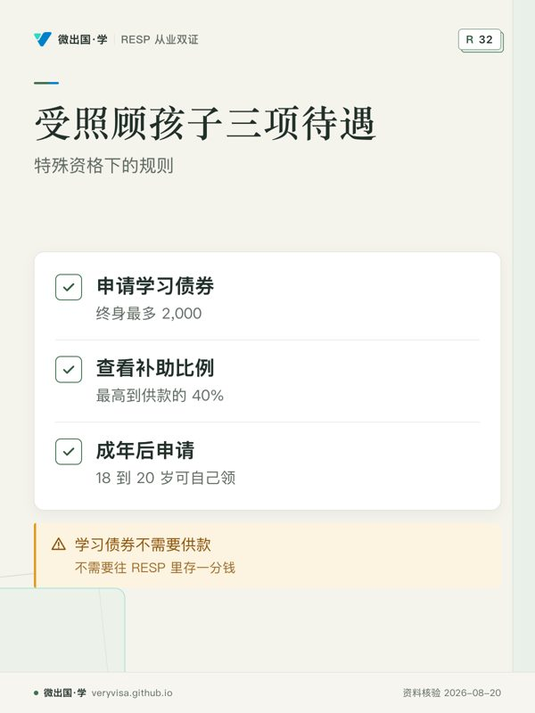
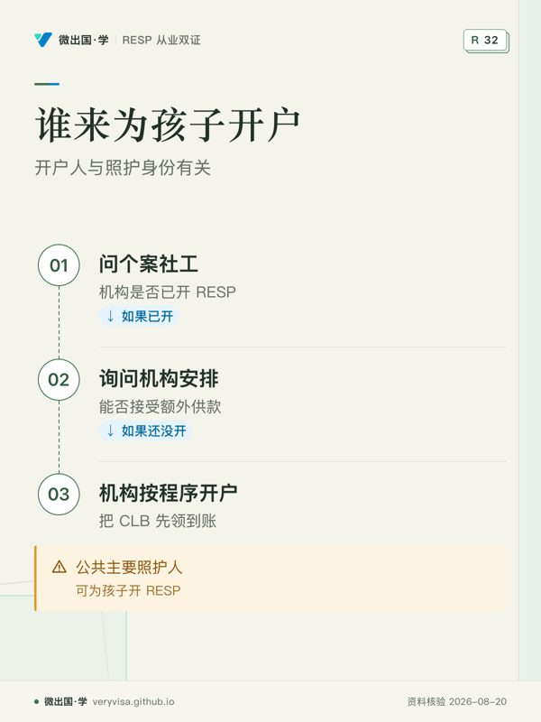

小杰八岁那年，因为家庭变故被省里的儿童福利机构接管，此后一直住在寄养家庭。寄养妈妈谢女士很疼他，想给他存点读书的钱，去银行一问，才知道自己不是小杰的法定监护人，没法以父母身份开户。她很失望：这孩子是不是就没有 RESP 了？
恰恰相反。受政府照顾的孩子，是加拿大教育储蓄制度里被特别照顾的一群：学习债券不看家庭收入，补助的配比最高可以到供款的 40%。只是开户的人不是寄养父母，而是照顾孩子的机构。
谁算「受照顾的孩子」
这里说的是一种特定情形：孩子由省或地区的儿童福利部门、地区机构、儿童援助协会、儿童保护服务、原住民儿童与家庭服务机构等照顾，这些机构就这个孩子领取联邦的儿童特别津贴（Children's Special Allowances，简称 CSA）。来源
CSA 相当于这类孩子的「儿童福利金」，由照顾机构代领。领 CSA，是孩子享受下面这些特别待遇的钥匙。《加拿大教育储蓄法》在规定额外补助和学习债券的条款（第 5(4) 条、第 6(2) 条）里，都专门写到了领特别津贴的孩子。来源
三项特别待遇
第一，学习债券（CLB）不看收入。 一般家庭领 CLB 要看家庭收入是否低于门槛，受照顾的孩子只要 2004 年或以后出生、有机构为他领 CSA，就符合资格。来源 CLB 的金额和普通孩子一样：第一个合格年度 500，此后每个合格年度 100，终身最多 2,000，不需要往 RESP 里存一分钱。来源
第二，补助最高到供款的 40%。 如果有人往这个孩子的 RESP 里存钱，除了 20% 的基本 CESG，还有 20% 的额外 CESG（通常只给低收入家庭，而且只针对每年前 500 的供款），合计最高 40%。来源 也就是说，每年存 500，可以配到 200。
第三，孩子长大后可以自己去领。 18 到 20 岁的年轻人，可以自己开一个 RESP，领回此前年份应得而没领到的 CLB。来源 按目前的规定，CLB 要在受益人未满 21 岁时申请；联邦已经宣布，从 2028 年 4 月起追溯申领 CLB 的年龄上限延长到 30 岁。来源
谁来开户
canada.ca 写得很明确：由照顾机构指定的员工，在机构选择的金融机构为孩子开 RESP。来源 机构在这里的身份是「公共主要照护人」，它可以做 RESP 的原始供款人，为孩子申请 CESG 和 CLB；机构申请补助和债券时，一般要提供自己的企业编号（BN），而不是某位员工的个人信息。
寄养父母本人通常不是公共主要照护人，也就不能直接替孩子领 CLB。但 CRA 规定，个人可以依据书面协议，取得公共主要照护人在 RESP 里的供款人权利。来源 所以谢女士想为小杰存钱，正确的路是：
- 问小杰的个案社工，机构有没有已经为他开 RESP、领 CLB；
- 如果开了，问机构能否接受她的额外供款，或者按书面协议安排她成为供款人；
- 如果还没开，请机构按程序开户，把 CLB 先领到账。
从 2028 年起，政府会为 2024 年及以后出生、4 岁时还没有 RESP 的合格孩子自动开户存入 CLB，受照顾的孩子也在其中。来源 在那之前，要靠机构和身边的大人主动去办。
离开照顾之后
孩子被收养、回到原生家庭，或年满离开照顾体系时，CSA 停止发放。已经领到的 CLB 和补助留在 RESP 里，仍然属于孩子，读合格课程时以 EAP 的形式付给他。之后的年份：
- 被收养：养父母成为主要照护人，之后能不能继续领 CLB，就看养父母的家庭收入和 CCB 资格，与一般家庭相同（见低收入家庭）。
- 回到原生家庭：同样按原生家庭的情况判断。
- 成年离开照顾：在 18 到 20 岁之间可以自己开 RESP，领回以前没领到的 CLB；RESP 的钱也在他读书时使用。
这时 RESP 的供款人可能需要变更（从机构变为养父母，或转到孩子自己名下的计划）。转户与换供款人的做法见换机构转户。
为什么这件事值得多问一句
受照顾的孩子能不能读专上教育，原因有很多，钱只是其中之一。但一笔两千块的 CLB、再加上一点点供款配到 40% 的补助，在十八岁时可能就是一学期的学费，或者是让他愿意去报名的那一点底气。很多成年后离开照顾体系的年轻人，根本不知道自己名下有一个 RESP，或者不知道还能去补领 CLB。
身边有这样的孩子，不论你是寄养父母、亲属照顾者、老师还是社工，都值得问一句：「他的 RESP 开了吗？CLB 领了吗？」
一笔小钱能变成多少
以小杰为例，假设机构在他八岁时为他开户，领到 CLB。按照 CLB 的规则，第一个合格年度 500，之后每个合格年度 100，累积到 15 岁那个福利年为止，终身最多 2,000。来源 未领的往年 CLB 在开户后可以补领，所以小杰有机会领满 2,000。
如果谢女士经机构同意，每年再为他存 500，从八岁存到十七岁，一共十年、5,000。每年这 500 配 20% 的基本 CESG 和 20% 的额外 CESG，一年 200，十年 2,000。
加起来：本金 5,000，CLB 2,000，CESG 2,000，再加上十年的投资增长。到小杰十八岁，账户里可能有一万出头。这笔钱付学费不算多，但对一个没有家庭支持的年轻人来说，足够他去报名读一个职业课程，或者撑过第一学期。
要注意一点：额外 CESG 的 20% 只配每年前 500 的供款；超过 500 的部分，只有基本 CESG 的 20%。来源 所以对受照顾的孩子，「每年 500」是性价比最高的一个数。
常见误会
「寄养父母可以直接用自己的名字开户领 CLB。」 一般不行。CLB 要求的是主要照护人身份，受照顾的孩子，主要照护人是机构。
「孩子成年离开照顾，RESP 就没了。」 RESP 里的钱仍然属于为孩子设立的计划，读书时照样领 EAP；需要变更供款人时，由机构办理。
「CLB 要存钱才有。」 不需要。CLB 不需要任何供款，开了户就能领。
你可以带走的清单
- 确认孩子是否由机构领取 Children's Special Allowances。
- 问个案社工：机构有没有为孩子开 RESP、有没有领 CLB。
- 想为孩子额外存钱的，先与机构商量，必要时签书面协议取得供款人权利。
- 每年存 500，可以配到最高 200 的补助。
- 孩子离开照顾后，提醒他：18 到 20 岁可以自己去领没领到的 CLB，并留意 2028 年起申领年龄延到 30 岁的变化。
从业者要多知道的
为儿童福利机构开 RESP，供款人是机构，需要机构的企业编号，开户资料和普通家庭不同，提前准备好清单。遇到寄养父母来咨询，不要直接替他们开户，先引导他们联系机构（见从业行为红线）。
来源
- canada.ca，受照顾儿童与青少年的教育储蓄福利：https://www.canada.ca/en/services/benefits/education/education-savings/children-in-care.html
- canada.ca，RESP 能加多少钱（CLB 金额）：https://www.canada.ca/en/services/benefits/education/education-savings/estimating-amounts.html
- canada.ca，加拿大学习债券（申领年龄、2028 年变化）：https://www.canada.ca/en/services/benefits/education/education-savings/canada-learning-bond.html
- CRA，谁可以当 RESP 供款人（公共主要照护人与书面协议）：https://www.canada.ca/en/revenue-agency/services/tax/individuals/topics/registered-education-savings-plans-resps/who-a-subscriber.html
- 《加拿大教育储蓄法》全文：https://laws-lois.justice.gc.ca/eng/acts/c-3.6/FullText.html
本页是一般性说明，不替你做法律或理财决定；个案以 ESDC、CRA 的核定和照顾机构的程序为准。
听、看、翻：特殊情况（8）：受监护儿童（in care）与特殊补助
制作中
制作中
本页知识卡
不看正文也能拿到这一节的核心内容：先看导读，再看图。点图放大，左右翻页。

- 先看先看三项待遇对应的资格变化。
- 易漏CLB 申请有年龄条件，规则有变化时需核对。
- 下一步去讲解页，再带资格问题找持牌专业人士。

- 先看先看开户流程，确认谁能操作账户。
- 易漏寄养父母本人通常不是公共主要照护人。
- 下一步去路线页，再带开户身份问题找持牌专业人士。